8
Working with DSPF Files
The Detailed Standard Parasitic Format files (DSPF files) contain the post-layout data, which includes the designed and parasitic devices in a design. These files are created using the parasitic extraction tools. Therefore, the content and format of each DSPF file is dependent on the extraction tool. To run simulations for designs containing devices represented by DSPF files, ADE Assembler needs to consider these components in a way different than the devices with schematic.
The following sections explain how you can use DSPF files while running simulations in ADE Assembler:
- Including DSPF Files in the Setup
- Rules for Adding Prefixes to Instance Names
- Customizing Netlist Creation Using the Options in .simrc
- Customizing Netlist Creation Using Environment Variable
Including DSPF Files in the Setup
You can include DSPF files in the ADE Assembler setup in the following ways:
- Specifying DSPF Files in the Simulation Files Setup Form
- Sweeping DSPF Files in the Corners Setup Form
- Sweeping DSPF Files in the Simulation Files Setup Form Using the VAR Function
- Sweeping DSPF Files in the Corners Setup Form Using the VAR Function
- Binding a DSPF View to a Design
Specifying DSPF Files in the Simulation Files Setup Form
To specify a DSPF file for a test, perform the following steps:
-
In the Data View assistant, right-click a test and choose Simulation Files.
The Simulation Files Setup form is displayed. -
On the Paths/Files tab of the Simulation Files Setup form, specify the name of the DSPF file in the Parasitic Files (DSPF) field.
A few additional options are displayed in the DSPF Options section on the form.
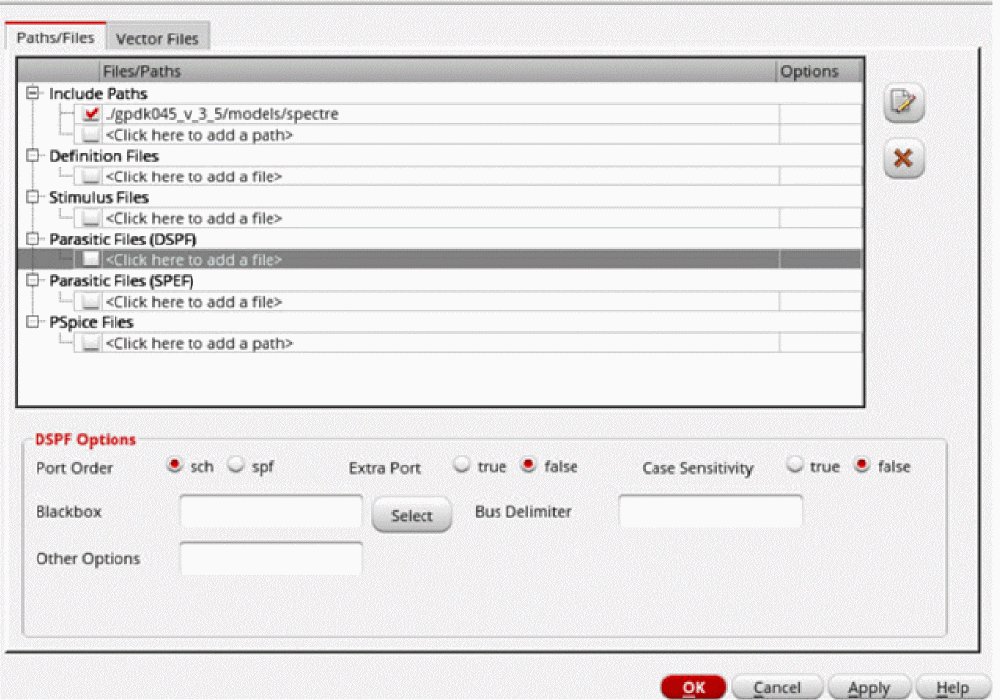 -
Specify the additional options to be used for the included DSPF file.
- Port Order: Specifies whether to take the port order of the subcircuit definition from the pre-layout schematic netlist or from the DSPF file subcircuit definition.
- Extra Port: Specifies how to handle extra ports in the DSPF or schematic subcircuit definition. By default, this option is set to false, which implies that the port number in the schematic and the DSPF file needs to be the same. If not, the simulation will stop. When you set this option to true, the extra ports in the DSPF subcircuit call are changed to internal nodes. In addition, the extra ports in the schematic subcircuit definition are connected to nodes with the same name in the DSPF netlist, otherwise, they will be floating.
-
Case Sensitivity: By default, the DSPF file is considered case insensitive. To make the DSPF file case-sensitive, set this option to
true. - Blackbox: Specifies the instances to be considered as blackboxes. For the blackbox subcircuit instances, Spectre takes the port order from the DSPF subcircuit definition, and the content from the schematic (blackbox) subcircuit definition
-
Bus delimiter: Enables you to map the bus delimiter between the schematic and DSPF or SPEF files. This option defines the bus delimiter in the schematic netlist, and optionally the bus delimiter in the DSPF file. By default, the bus delimiter of the DSPF file is automatically taken from the DSPF file header (that is,
*|BUSBIT [ ]or*|BUS_DELIMITER [ ]). If the bus delimiter is not defined in the parasitic file header, you need to specify it in thedspf_include bus_delimstatement. If both are specified, then the parasitic file bus delimiter is taken from thedspf_include bus_delim. This option specifies the value fordspf_include bus_delim.
Buses are typically specified in the schematic using angular brackets as the delimiters, for example, bus<0:4>. Buses in the DSPF are flattened and use square brackets, for example, bus[0], bus[1], bus[2], bus[3], and bus[4]. To map between the different bus delimiters, specify the schematic bus delimiters followed by the DSPF bus delimiters in the Bus Delimiter field, as shown in the figure.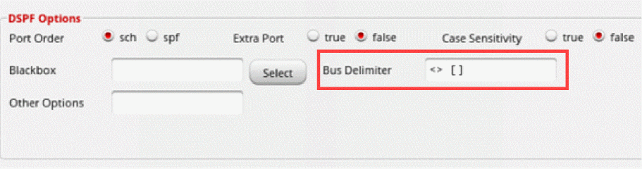 -
Other Options: Any
dspf_includeoption other than those available on this form. For example, you can enter theauto_blackbox=trueoption to specify that Spectre needs to automatically consider a subckt as a blackbox subckt if it does not have the following:
-
Click OK to save and close the form.
ADE Assembler uses the DSPF file for the subcircuit defined in it.
Annotating DSPF Results for DC node Voltage and DC Operating Points
When you specify DSPF files in your simulation setup, you must manually add the cap parameter in the CDF Editor to view the DC node voltage and DC Operating points annotation for all devices.
To add the cap parameter in the CDF Editor:
-
In the CIW, choose Tools – CDF – Edit.
The Edit CDF form appears. -
On the Edit CDF form:
- In the Library Name field, select the library whose CDF you want to edit.
-
In the Cell Name list, select
mimcap. - Click the Interpreted Labels tab.
- On the Interpreted Labels tab, click the Parameters(cdsParam) tab.
-
On the Parameters(cdsParam) tab, select Operating Point Results from the Use cdsParam to display group of options.
This enables the Parameters list box.
-
In the Parameter column, add
cap.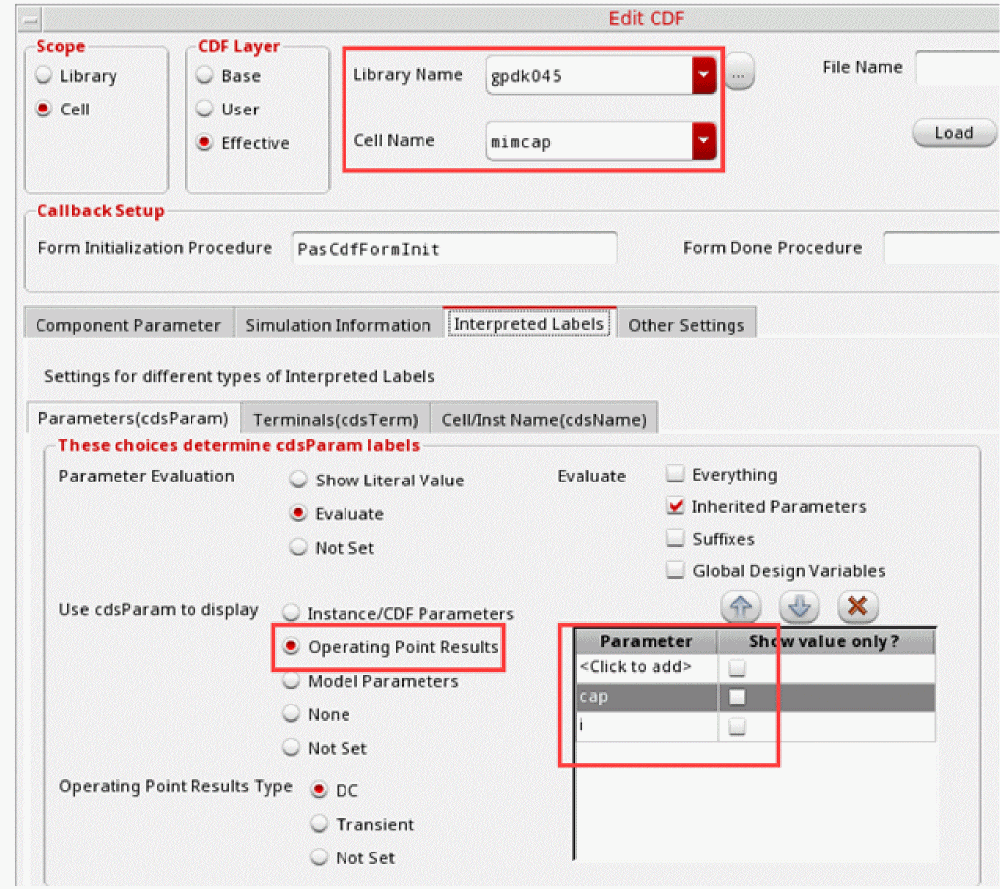 - Click OK.
To view the annotation for DC node voltage and DC Operating Points results in the schematic:
- On the Results tab of the Outputs pane, right-click a data point and choose Annotate.
-
In the sub-menu that appears, select DC Node Voltages and DC Operating Points.
Assembler annotates your design schematic with the DC node voltage values and DC operating point data.
Sweeping DSPF Files in the Corners Setup Form
If you have multiple DSPF files that you can use for a particular device, and you want to use one file at a time, you can sweep the files using the Corners Setup form.
-
Create a model file that a separate section for the each DSPF file to be swept.
The following code shows a sample content of a model file:
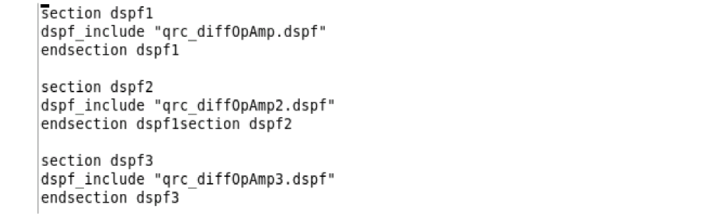 -
In the Corners Setup form, include the model file and select a unique section for each corner.
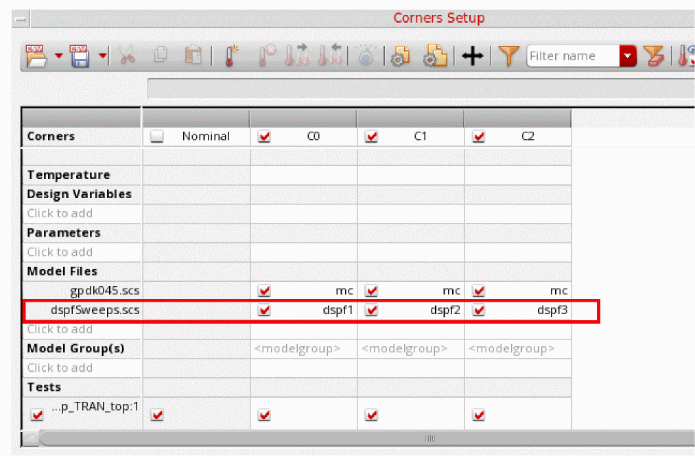ADE Assembler uses the DSPF file for the subcircuit defined in it.
If required, you can use the schematic view for selected corners and a DSPF file for the remaining. For example, in the following corners setup, cornerC1is not using the DSPF file. Therefore, it will use the schematic view. In this case, the output shows the difference in values of cornersC0andC2as compared to cornerC1.
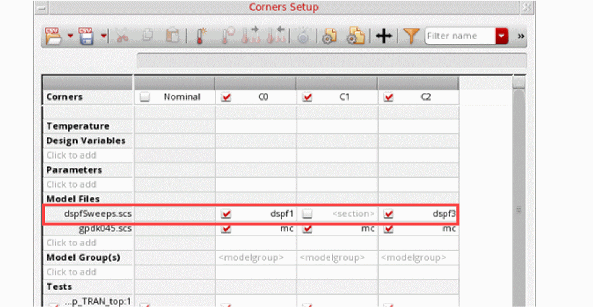The output shows the difference in values of cornersC0andC2as compared to cornerC1.
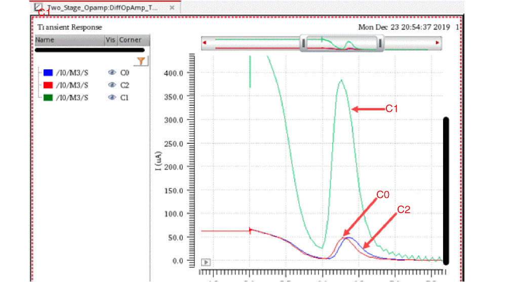
Sweeping DSPF Files in the Simulation Files Setup Form Using the VAR Function
To specify multiple DSPF files for a test in the Simulation Files Setup form:
-
In the Data View assistant, add a design variable or global variable to specify the path to one or more DSPF files.
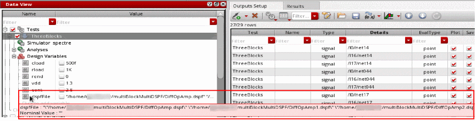Here, the design variable is nameddspfFileand its value has been set to the path of three DSPF files. -
On the Paths/Files tab of the Simulation Files Setup form, specify the name of the design variable enclosed within the VAR function in the Parasitic Files (DSPF) field.
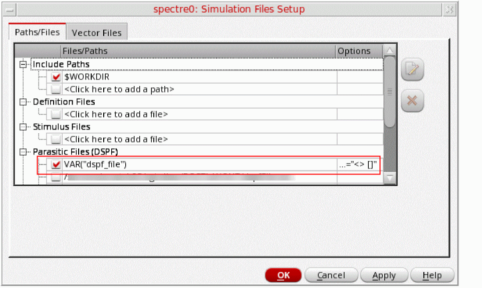 - Click Run on the toolbar to run the simulation.
- Right-click a point from the Results tab and select Plot Across Design Points from the context menu.
The Results Browser displays the plotted outputs for the three DSPF files that are swept.
Sweeping DSPF Files in the Corners Setup Form Using the VAR Function
To specify different DSPF files in the Corners Setup form:
-
Create a model file that contains sections to be used by multiple DSPF files.
The following code shows the sample content of a model file:section dspf1 dspf_include "DiffOpAmp.dspf" dspf_include "DiffOpAmpB.dspf" dspf_include "DiffOpAmpC.dspf" endsection dspf1 section dspf2 dspf_include "DiffOpAmp1.dspf" dspf_include "DiffOpAmpB1.dspf" dspf_include "DiffOpAmpC1.dspf" endsection dspf2 section dspf3 dspf_include "DiffOpAmp2.dspf" dspf_include "DiffOpAmpB2.dspf" dspf_include "DiffOpAmpC2.dspf" endsection dspf3
- Save this model file at the required location.
-
In the Data View assistant, specify a design variable, such as DSPF_PATH, that points to the location of the model file.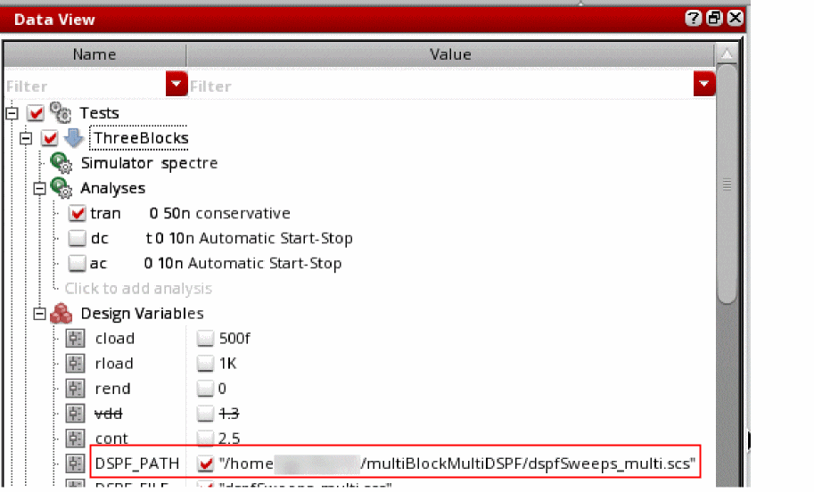
-
In the Data View assistant, right-click the Corners group and select Open Corners Setup.
The Corners Setup form is displayed. -
In the Model Files field, specify the model file by enclosing it within the VAR function and specify a section for each corner.
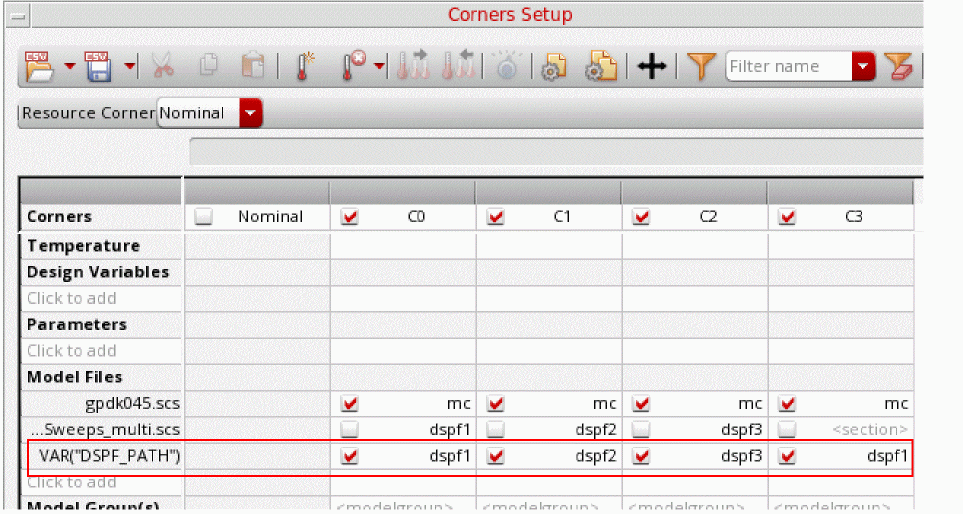 - Click OK on the Corners Setup form.
- Click Run on the toolbar to run the simulation.
-
Right-click a point from the Results tab and select Plot Across Corners from the context menu.
The Results Browser displays the plotted outputs for all corners where different DSPF files have been swept.
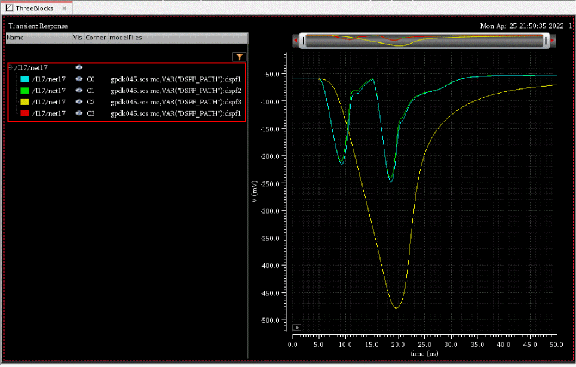Here, each corner uses a different set of DSPF files. -
Optionally, in the Corners Setup form, use the VAR function to specify different model sections for a corner.
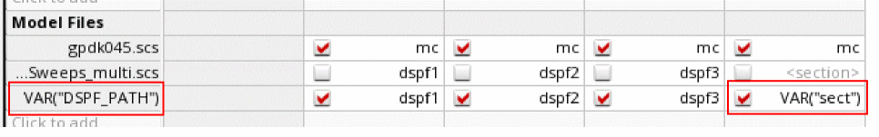 - Click OK on the Corners Setup form.
- Click Run to run the simulation.
-
Right-click a point from the Results tab and select Plot Across Corners from the context menu.
The Results Browser displays the plotted outputs for all corners where different DSPF files as well as model sections have been swept.
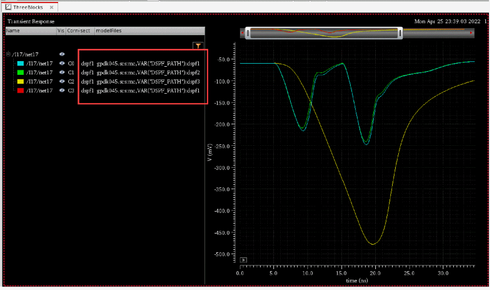
Binding a DSPF View to a Design
If you need to replace the schematic of a particular device in your design with the DSPF view, you can bind the cellview to the corresponding DSPF view.
- Create or edit the config view for its parent cellview in Virtuoso Hierarchy Editor.
-
Specify the DSPF view to be used in the View to Use column in the Cell Bindings table.
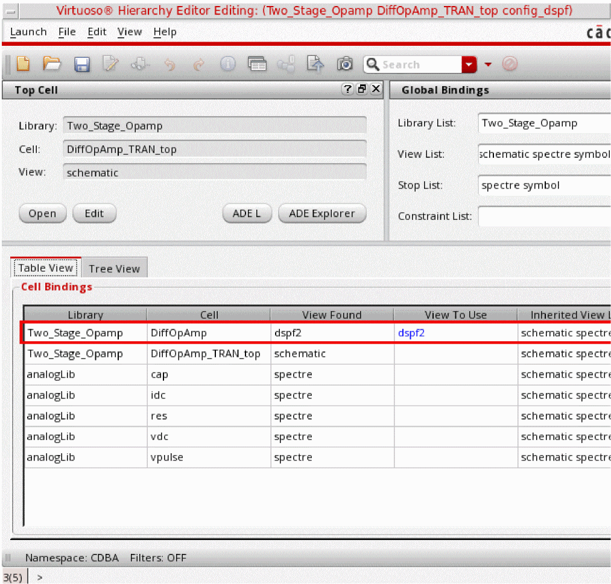 -
Save the changes in the Hierarchy Editor.
Rules for Adding Prefixes to Instance Names
The netlister determines the naming prefix for instances using the namePrefix property set in the Simulation Information section of the Edit CDF form.
The namePrefix for instances is decided as follows:
-
If the
namePrefixis not found in the CDF Simulation Information section, the netlister printsXas the namePrefix. -
If the
namePrefixis the same as the first character of the device name, the netlister does not add a prefix to the instance name in the netlist.
If none of these conditions are met, the netlister adds the prefix namePrefix in the output of the instance. You can modify the prefixes that are chosen by either using the dspfNamePrefixSimInfo environment variable or the useSelfCDFInPostLayoutNetlist environment variable.
Examples
-
When the
namePrefixand the first character of the device name are the same
Themimcapdevice is netlisted in the DSPF asC0, when the simulator used is auCdl.C0 outm#64 net044#67 AVSS g45cmim w=5e-06 l=5e-06 m=1 $x=15.29 $y=25.58
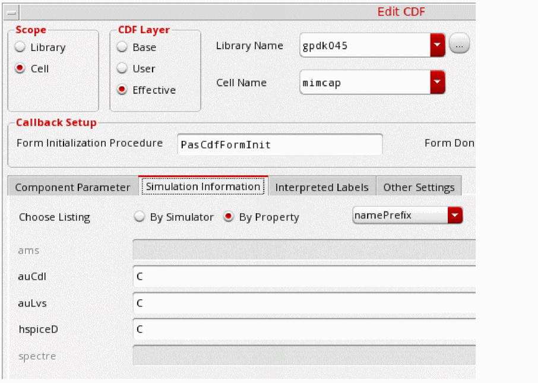Here, thenamePrefixin the Edit CDF form is set toC, which is the same as the first character of the device name. According to the pre-defined rules, no prefix is added formimcapin the DSPF file.
SettingdspfNamePrefixSimInfoto ams or spectre will add anXprefix and the DSPF will print the device as follows:XC0 outm#64 net044#67 AVSS g45cmim w=5e-06 l=5e-06 m=1 $x=15.29 $y=25.58
-
When
namePrefixhas no specified value
Set thedspfNamePrefixSimInfoenvironment variable to a simulator, such as spectre, that does not have anamePrefixspecified formimcap.
Based on thenamePrefixrules, theXprefix is added to the devices.XC0 outm#64 net044#67 AVSS g45cmim w=5e-06 l=5e-06 m=1 $x=15.29 $y=25.58
-
When the device name and
namePrefixare different
Consider that you have resistors in the netlist as shown below:R14@2 (net#222 net0178#12 gnd#1330 ) rhim_m lr=3.5e-06 wr=8e-07 + multi=(1) $x=69.656 $y=38.422
To netlist this correctly with anXprefix, setdspfNamePrefixSimInfoto auCdl because thenamePrefixfor auCdl isX.
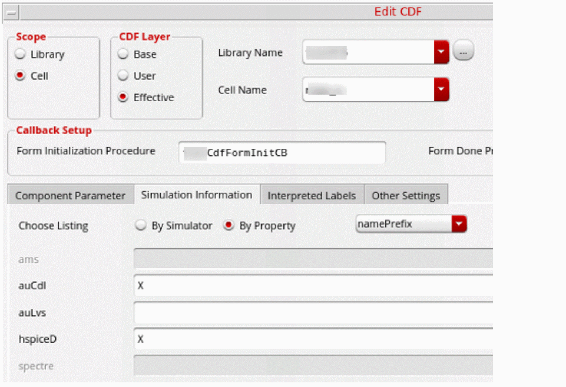XR14@2 (net#222 net0178#12 gnd#1330 ) rhim_m lr=3.5e-06 wr=8e-07 + multi=(1) $x=69.656 $y=38.422
This is applicable in cases when the auCdl prefix is not the same as the first character of the device name. -
When
namePrefixhas a value for a specific simulator and none for others
Consider that a device has thenamePrefixset toRfor only the auCdl simulator, and no value for other simulators in the Edit CDF form. On netlisting, no prefix will be added to resistors if you setdspfNamePrefixSimInfoto auCdl.
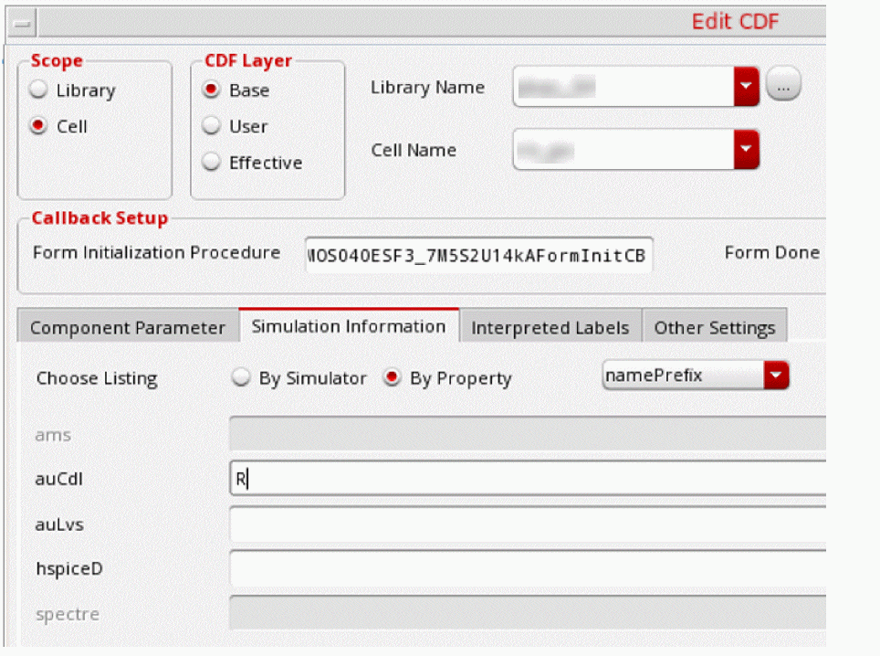If you setdspfNamePrefixSimInfoto any other simulator name, the prefixXwill be added as per thenamePrefixrules. -
When
namePrefixvalue is not shown
ThenamePrefixformimcapisCfor the auCdl, auLvs, and hspiceD simulators, and disabled for ams and spectre.
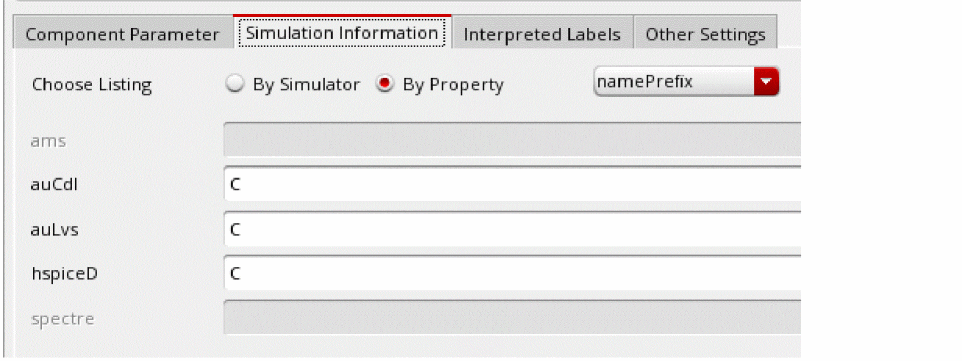If you setdspfNamePrefixSimInfoto auCdl, auLvs, and hspiceD, no prefix is added, but if you set the environment variable to ams, or spectre, the prefixXis added to the devices.XC0 outm#64 net044#67 AVSS g45cmim w=5e-06 l=5e-06 m=1 $x=15.29 $y=25.58
Related Topics
Customizing Netlist Creation Using the Options in .simrc
The content and format of a DSPF file is heavily dependent on the extraction tool and the settings. Often, simulation problems occur because the syntax used for the nets and terminals in the DSPF file is different from the syntax used in the netlist created by Spectre. For example, the hierarchy delimiter used in a DSPF file is '.' (I0.M9) whereas the delimiter used in the Spectre netlist is '/' (I0/M9).
Similarly, for terminal currents, mapped name of top level devices in the DSPF file can have an extra prefix, such as XX instead of X, which does not exist in the netlist.
If your DSPF files show such differences, you can set options in the .simrc file to update the save statement in the netlist so that the device names match with those in the DSPF file. For this, you need to read the contents of the DSPF file and set the variables in the .simrc file to update the name mapping.
The following table describes the options you can set in the .simrc file:
| Variable | Description |
|
Specifies the format to be used for name mapping.
Valid values: |
|
|
Specifies the delimiter to be used to save terminal currents. This value is not taken from the DSPF because Spectre requires this to be set to a colon. Therefore, it is mandatory to set it to the default value, which " |
|
|
Specifies whether the prefixes defined by other |
|
|
Specifies how many prefixes need to be added to the names of the devices at a level below the DSPF block. This variable does not affect the name of the DSPF block.
When this variable is set to
When this variable is set to
A device named
where the first |
|
|
Specifies the prefix to be used to identify the top-level devices while mapping
If the DSPF has spfDevicePrefixForMimcap "C"
For example, using this variable will map a capacitance, |
|
|
Specifies the delimiter to be used in hierarchical names. This variable should be set to the DIVIDER setting in the DSPF Header section.
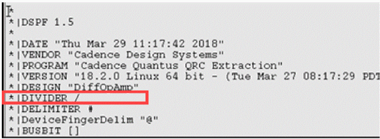
|
|
|
Specifies the character case to be used while mapping the terminal names. |
|
|
Specifies the delimiter to be used to mention the device fingers. Set this value to the delimiter used in the DSPF file. The example shown below uses the
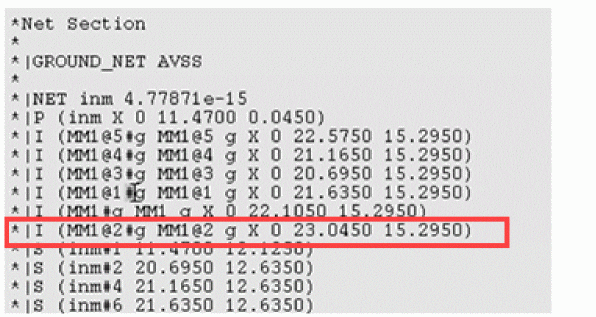
In the expressions that calculate the sum total of current for a multi-fingered device, you must use the same delimiter that is mentioned in the DSPF file. |
|
|
Specifies the prefix for any macro models in the design. In some PDKs, the MOS transistors are implemented as macro models to which an X prefix is added during LVS and extraction.
To ensure that the save statements adds the X prefix so that the content saved by simrc matches the DSPF, set the |
|
|
Specifies the default device prefix to be used when no prefix is specified in the namePrefix field in the simInfo section of the Component Description Format form, but a prefix is required to correctly identify a device in the DSPF. |
|
|
Specifies the character case to be used while mapping the terminal names. |
|
|
Overrides the value specified in the namePrefix field in the simInfo section of the Component Description Format form. |
|
|
Specifies the prefix to be used to identify the top level devices while mapping the terminal currents. For terminal currents the mapped name of the top level devices in the DSPF file can have an extra prefix, such as |
|
|
Specifies the prefix to be used to identify the top level devices for operating points. Set this variable to the prefix or to
For example, if the saved device names in the netlist are prefixed with |
|
|
Specifies the prefix to be assigned to the devices that are considered to be boxed, that is a DSPF embedded inside a DSPF, by the extractor. The names of such boxed devices are specified by the In the netlist saved for simulation, the names of the boxed devices are printed with the assigned prefix. You can probe only the terminals of such boxed subcircuits or devices, not the objects inside them. |
|
|
Specifies a list of names of devices to be considered as boxed. These devices do not get a prefix in the netlist. While creating netlist, the names of these boxed devices are assigned a prefix specified by the |
The following example of the .simrc file shows how you can specify these settings:
dspfFileEnvOptions = '( (nil spfFileNameMappingFormat "cdl" spfFileTermDelimiter ":" spfFileTerminalMapping "lower"
spfDevicePrefixForMimcap "C"
spfFileFingerDelimiter "@"
spfFileDeviceDefaultPrefix "M"
spfFileHierDelimiter "/"
spfFileDevicePrefixForMacroModels "X"
spfFileDevicePrefixToOverrideCDF "X"
spfFileDevicePrefixForTermCurrent "X"
spfFileDevicePrefixForInstCurrent " "
spfFileNetMapping "lower"
spfFileBoxedDeviceList ("devicename1" "devicename2")
spfFilePrefixForBoxedDevice "XB"
))
Customizing Netlist Creation Using Environment Variable
When using DSPF files, you can also use the saveFingersForOpParams and sumDeviceFingerCurrents environment variables to customize the save statement in the netlist.
You can use the dspfNamePrefixSimInfo environment variable to specify the simulator from which the namePrefix value is used to modify prefixes for device names in a DSPF file. To use the namePrefix from the current simulator, you can use the useSelfCDFInPostLayoutNetlist environment variable.
Return to top